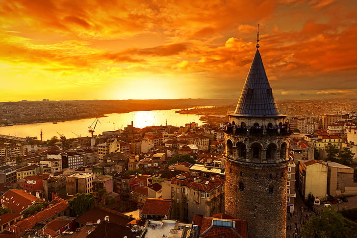
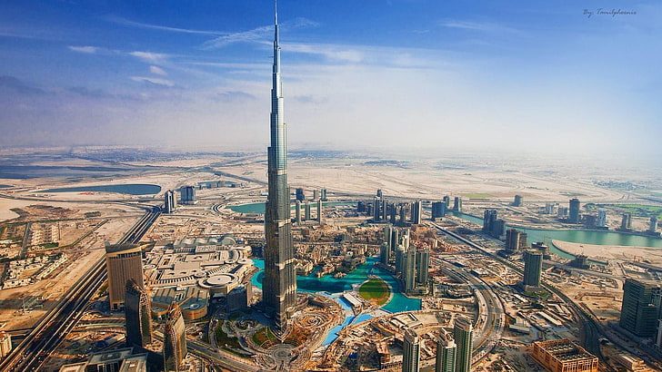
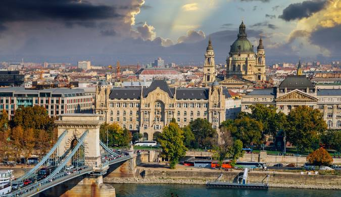
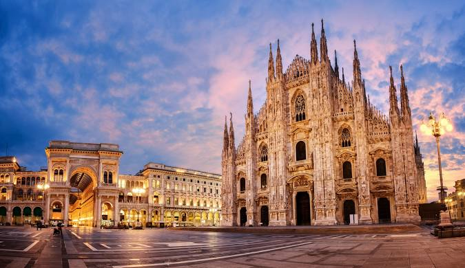
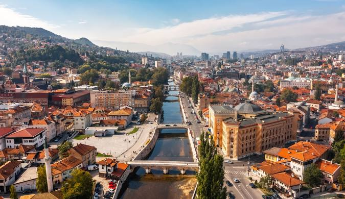
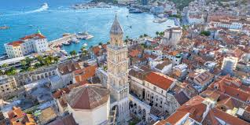
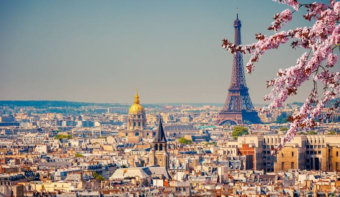

ISTANBUL
Istanbul is a city that bridges two continents, Europe and Asia, rich in history, culture, and tradition. Among its most important landmarks are the Hagia Sophia, which has served as a church, mosque, and museum over the centuries; the Blue Mosque, with its stunning blue tiles and impressive minarets; the Topkapi Palace, which was the residence of Ottoman sultans; and the Grand Bazaar, one of the largest and oldest covered markets in the world. This city offers a unique blend of oriental charm and modern life, making it one of the most exciting destinations in the world.
See On The Map
DUBAI
Dubai is a futuristic city known for its incredible skyline, luxury, and innovation. Among its most famous landmarks are the Burj Khalifa, the tallest building in the world; the Palm Jumeirah, a man-made island shaped like a palm tree; the Burj Al Arab, one of the most luxurious hotels globally, and the Dubai Mall, one of the largest shopping centers in the world. Dubai also offers stunning beaches, extravagant shopping experiences, and a thriving cultural scene, making it a top destination for travelers seeking modern luxury and adventure.
See On The Map
BUDAPEST
Budapest is a city of stunning architecture, rich history, and vibrant culture. Key landmarks include the Buda Castle, a historic royal palace offering panoramic views of the city; the Parliament Building, an iconic symbol of Hungary with its neo-Gothic design; the Fisherman’s Bastion, with its fairytale-like towers and views over the Danube River; and the Széchenyi Thermal Bath, one of the largest and most famous thermal spas in Europe. The city's blend of old-world charm and modern energy, along with its beautiful bridges, make Budapest one of Europe's most enchanting destinations.
See On The MapATHENE
Athens is a city steeped in ancient history and culture, often considered the cradle of Western civilization. Key landmarks include the Acropolis, home to the Parthenon, a symbol of ancient Greece and democracy; the Temple of Olympian Zeus, one of the largest ancient temples; the ancient Agora, a marketplace and center of public life; and the Acropolis Museum, which houses priceless artifacts from Greece’s classical period. Athens blends ancient ruins with modern life, offering a unique experience that connects visitors to both its rich past and vibrant present.
See On The Map
MILANO
Milan is a global hub for fashion, design, and art, known for its stylish atmosphere and rich cultural heritage. Major landmarks include the iconic Cathedral of Milan (Duomo), a stunning Gothic structure with breathtaking views from its rooftop; Leonardo da Vinci’s "The Last Supper" at the Convent of Santa Maria delle Grazie; the elegant Galleria Vittorio Emanuele II, a historic shopping arcade; and Sforza Castle, a Renaissance fortress with museums and art collections. Milan’s mix of historical charm and modern sophistication makes it one of the most dynamic cities in Europe.
See On The Map
SARAJEVO
Sarajevo is a city where different cultures, religions, and traditions have coexisted for centuries, making it a unique and important center for Muslims in Europe. Key Islamic landmarks include the Gazi Husrev-beg Mosque, one of the most significant Ottoman mosques in the Balkans; the beautiful Bey’s Mosque; and the historic Baščaršija, a lively Ottoman-era marketplace. The city is also home to the Sarajevo Tunnel, which played a crucial role during the siege of the 1990s, and the Gazi Husrev-beg Library, holding important Islamic manuscripts. Sarajevo’s blend of Islamic heritage with diverse cultural influences makes it a truly unique and vibrant destination.
See On The Map
SPLIT
Split is a vibrant coastal city in Croatia, rich in history and Mediterranean charm. Its most famous landmark is the Diocletian’s Palace, a UNESCO World Heritage site, which forms the heart of the old town and is one of the best-preserved Roman imperial residences. Other notable sites include the Cathedral of Saint Domnius, originally built as a mausoleum for the emperor, the ancient Temple of Jupiter, and the picturesque Riva promenade, perfect for strolling by the sea. Split also boasts beautiful beaches and a lively cultural scene, blending ancient history with modern Mediterranean life.
See On The Map
PARIS
Paris, the capital of France, is a city renowned for its art, history, and romantic ambiance. Among its most iconic landmarks are the Eiffel Tower, a global symbol of France, the Louvre Museum, home to the famous "Mona Lisa" and countless masterpieces, and the Notre-Dame Cathedral, a Gothic masterpiece. The Champs-Élysées and Arc de Triomphe offer stunning views of the city, while Montmartre’s artistic heritage is celebrated at the Sacré-Cœur Basilica. Paris is a blend of timeless elegance and vibrant modern culture, making it one of the most visited and admired cities in the world.
See On The Map
ROME
Rome is a city steeped in history and ancient grandeur, offering a captivating blend of archaeological wonders and vibrant modern life. Key landmarks include the Colosseum, the iconic arena where gladiators once fought, the Roman Forum, the heart of ancient Rome’s political and social life, and the Pantheon, a well-preserved temple dedicated to Roman gods. St. Peter’s Basilica in Vatican City, home to priceless art and relics, and the Trevi Fountain, where visitors toss coins for good luck, are also must-see sites. Rome’s rich history, combined with its lively atmosphere, makes it a timeless destination.
See On The Map